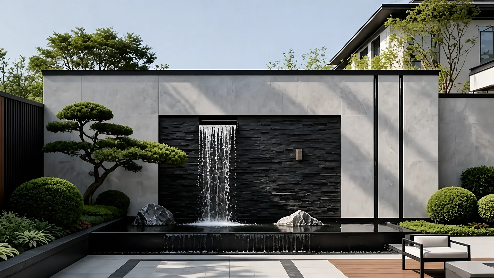
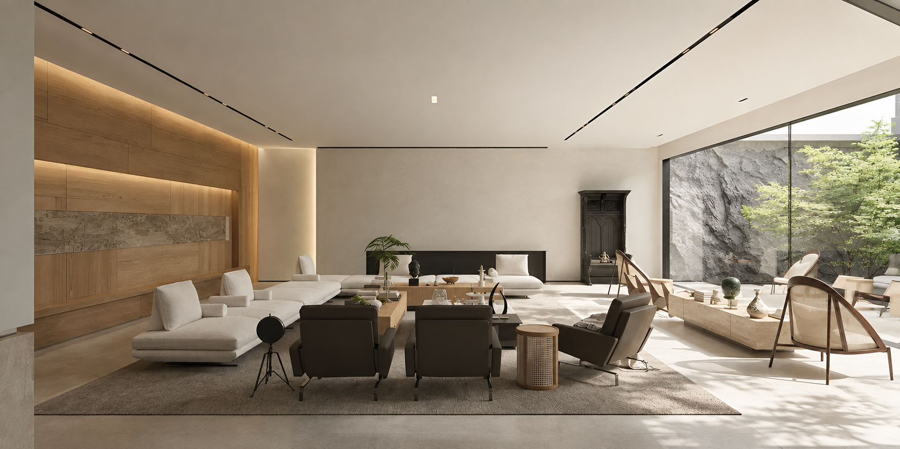
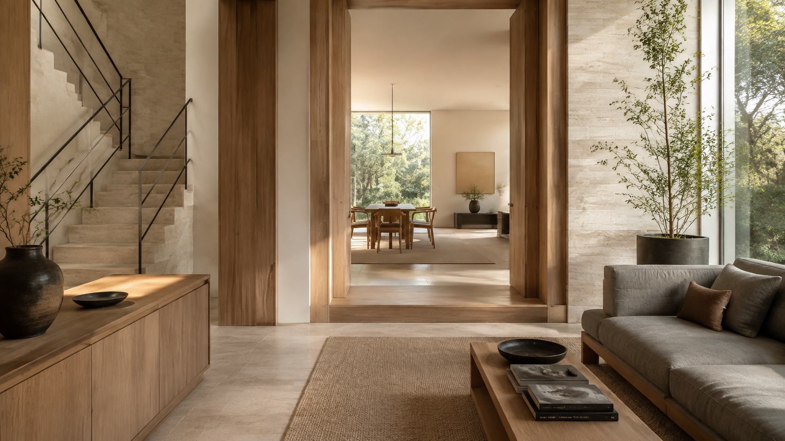
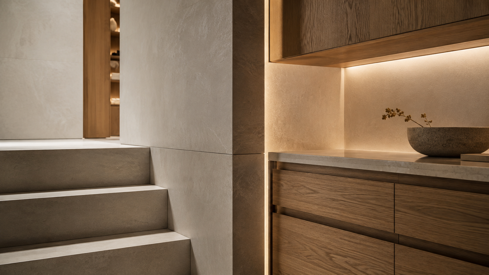

理解
理解家庭节奏、现场条件与真正重要的决策。

精选私宅
个人项目资料与空间阅读的精选记录。部分画面为视觉重构，具体说明见各项目备注。
空间阅读 / 改造示意
基于现有画面的设计阅读；对比图不代表真实施工前后记录。

空间基底示意设计表达基于现有项目画面的空间解读。对比图为视觉重构示意，不代表真实施工前后记录。
不同尺度，同一份专注
观察方式

日光从哪里进入、停留，并在一天中发生变化。
让私密与共享的日常，在不相互干扰中发生。
当人、物与习惯变化，家仍然能够保持从容。
设计方法

理解家庭节奏、现场条件与真正重要的决策。
塑造空间秩序、材质关系与光的体验。
厘清各方接口，让设计意图在落地过程中保持清晰。
联系我
如果你想交流建筑、室内与居住空间，可以留下想说的话；页面不会保存或提交填写内容。
个人记录